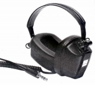
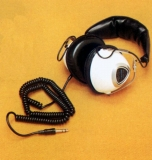

ROTEL （ローテル）
ローテル商事扱いのオーディオブランド。かつてはローランド電子という社名であったが、電子楽器のローランドとは無関係。秋葉原駅の電気街口のラジオ会館1F丸山無線にかつて展示されていたため、ブランド名や製品を目にした方も多いと思う。生産・開発の拠点は海外にあり、ヨーロッパ（イギリス？）風のシンプルなデザインの製品を作っている。
ヘッドフォンについては、ローランド電子の頃に、販売していた。製品重量、再生周波数帯域からみてコーン型の製品と思われる。


（左 RH-430 右 RH-710)